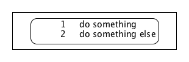
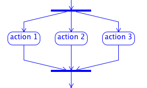
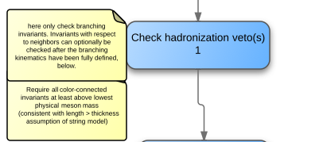

There exists several modifiers for actions, other than the zoom level.
...
//$ <action_modifier_1> <action_modifier_2> <...> do something
//$ and other thing as well
...
| Modifier | Effect |
|---|---|
| <comment>, <note> | comment previous action |
| <keepFormat> | keep spaces, returns and comment lines with all non-alphanumeric characters. Starts at the next line. |
| <parallel> | order among parallel actions does not matter; displays a fork and a sync. |
...
//$ <keepFormat>
//$ 1 do something
//$ 2 do something else
...

...
//$ <parallel> action 1
code
//$ <parallel> action 2
code
//$ <parallel> action 3
code
...

...
//$ Check hadronization veto(s) 1
//$ <comment>: here only check branching invariants. Invariants with respect
//$ to neighbors can optionally be checked after the branching kinematics
//$ have been fully defined, below.
//************************************************************************
//$ <comment>: Require all color-connected invariants at least above lowest
//$ physical meson mass
//$ (consistent with length > thickness assumption of string model)
...
